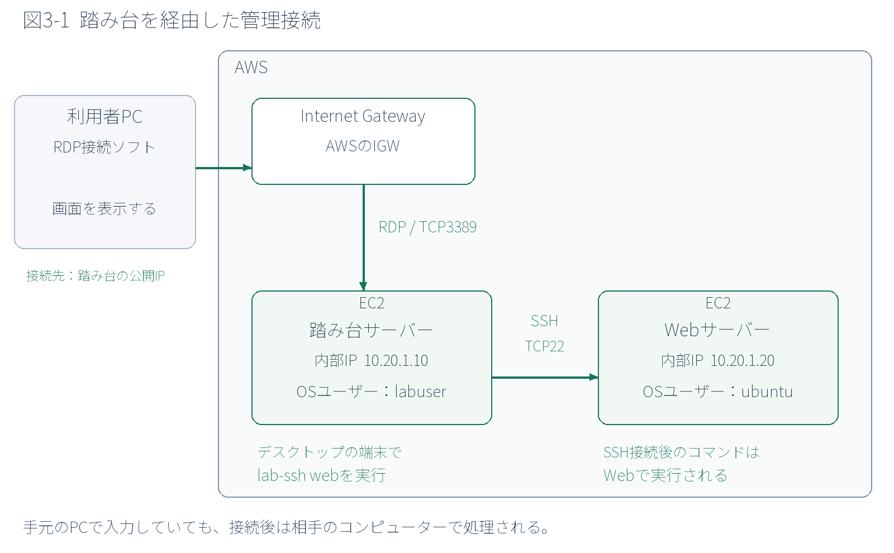
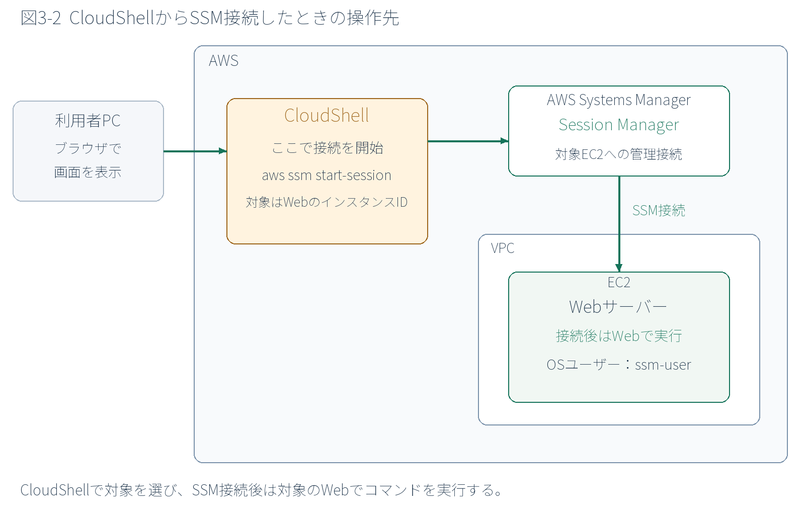
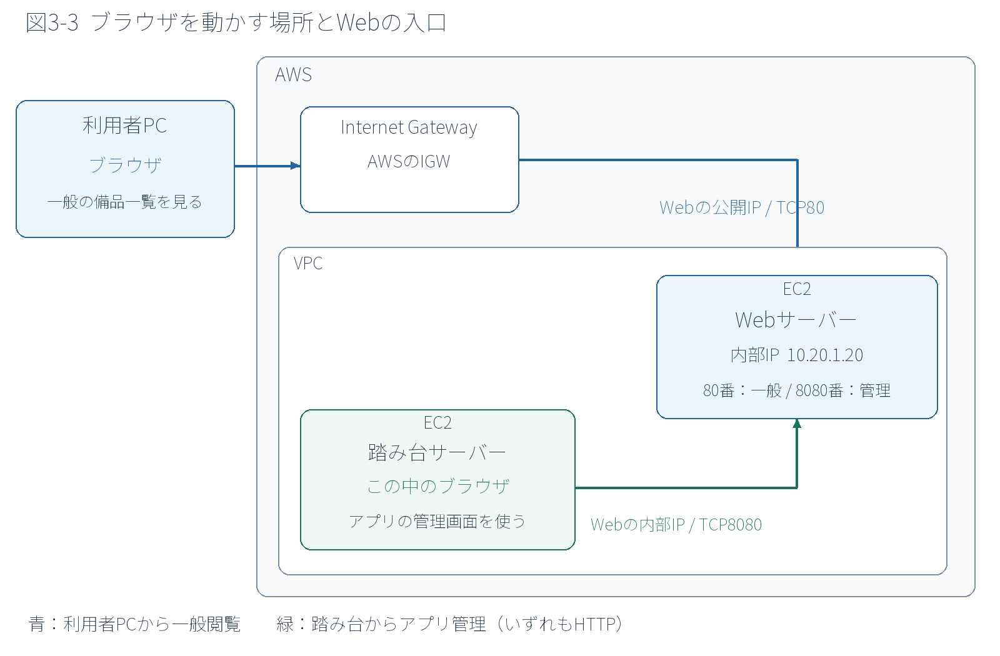

第3章 サーバーへの接続と作業場所
この章で分かること
学校の備品管理システムでは、Webページを表示するための設定はWebサーバーで、備品データを保存するための設定はDBサーバーで行う。これらのサーバーはAWS上にあり、手元のPCから接続して操作する。
接続には、相手のデスクトップを開く方法と、相手へコマンドを送って操作する方法がある。また、同じ画面の中で作業していても、接続方法によって操作する相手が異なる。本章では「どのPCから」「どのサーバーへ接続し」「そこで何を操作するか」を、今回の構成に当てはめて説明する。
・ 利用者PC、CloudShell、踏み台、各サーバーはどう違うのか。
・ RDP、SSH、SSMは、それぞれ何を操作するために使うのか。
・ 利用者PCのブラウザと踏み台のブラウザでは、通信の送信元がどう違うのか。
・ サーバーの設定変更と、Webアプリの管理画面の操作はどう違うのか。
3.1 手元のPCと操作するサーバーを分けて考える
キーボードやマウスを操作している手元のコンピューターを、本書では利用者PCと呼ぶ。備品管理システムのWeb、DNS、DBなどは、AWS上にある別のコンピューターである。サーバーを設定するには、利用者PCから必要な方法で接続する。
例えば、利用者PCに踏み台のデスクトップを表示した場合、画面を表示するのは利用者PC、デスクトップやその中のソフトウェアを動かすのは踏み台である。さらに、そのデスクトップの端末からWebへ接続すれば、その端末に入力するコマンドはWebで実行される。手元のPCが変わらなくても、操作する相手は切り替わる。
今回使う環境を、最初に次のように整理しておこう。
| 環境 | 何であるか | 今回の主な用途 |
|---|---|---|
| 利用者PC | 手元で操作するコンピューター | 一般のWeb閲覧、AWSコンソールの利用、RDP接続の開始 |
| CloudShell | ブラウザから使うAWS側の作業環境 | AWSのコマンドを実行し、対象EC2へのSSM接続を開始する |
| 踏み台 | 管理用のデスクトップを備えたEC2 | 内部Webの閲覧、アプリ管理、内部SSHの開始 |
| Web・DNS・DB・配布の各サーバー | 役割ごとのサービスを動かすEC2 | それぞれのソフトウェアを導入・設定し、サービスを動かす |
AWSコンソールは、AWSの資源を管理するWeb画面である。例えばEC2の一覧で対象サーバーを選ぶ操作は、利用者PCのブラウザからAWSへ行う操作である。一方、CloudShellや接続先サーバーの端末にコマンドを入力する操作は、その環境でプログラムを実行する操作になる。
3.2 RDPで踏み台のデスクトップを開く
RDP（Remote Desktop Protocol）は、離れたコンピューターのデスクトップを画面越しに操作するための通信方式である。今回は利用者PCから踏み台の公開IPへTCP3389で接続する。インターネットからの接続は、AWSのInternet Gateway（IGW）を通って踏み台へ届く。
Windowsでは「リモートデスクトップ接続」を開き、接続先に現在の踏み台の公開IPを指定する。今回のRDP用ユーザーはlabuserであり、パスワードには初期設定で用意した本人用の値を使う。これは利用者PCのWindowsへログインするアカウントとは別である。具体的な接続操作は、練習の共通準備で扱う。
接続すると、利用者PCの画面の中に踏み台のUbuntuデスクトップが表示される。その中でブラウザを開けば、ブラウザは踏み台上で動く。端末を開いた時点では、その端末も踏み台上で動く。踏み台へのRDP接続だけで、WebやDBのOSまで同時に操作できるようになるわけではない。
3.3 踏み台からSSHで対象サーバーを操作する
デスクトップの先にあるサーバーへ接続する
Webのサービス設定やDBの設定を操作するには、そのサーバーへ接続する必要がある。踏み台を使う経路では、RDPで開いた踏み台のデスクトップ内に端末を開き、そこから対象サーバーへSSH接続する。
SSH（Secure Shell）は、別のコンピューターへ安全に接続し、コマンドで操作するための仕組みである。今回は踏み台からWeb、DNS、DB、配布の各サーバーの内部IPへTCP22で接続する。端末の操作方法やLinuxコマンドの基本は、OS・Linux教材のSSHの説明を参照する。
初期準備済みの踏み台には、接続先や鍵の設定を使うlab-sshという補助コマンドが用意される。例えば、Webへ接続する場合は次のように指定する。
実行場所：RDPで開いた踏み台のデスクトップ内の端末。
lab-ssh webwebはWebサーバーを選ぶ指定である。補助コマンドは準備済みの設定を使い、Webの内部IP10.20.1.20へSSH接続する。ほかの役割にはdns、db、repoを指定する。内部SSH用の秘密鍵は踏み台内で保持する。

図3-1 利用者PCから踏み台を経由してWebを操作する。 RDPでは踏み台のデスクトップを開く。その中の端末からSSH接続すると、以後その端末に入力するコマンドはWebで実行される。緑の矢印は管理接続を表す。
接続後も踏み台のデスクトップは残る
SSH接続によって操作先が変わるのは、接続に使った端末である。踏み台のデスクトップ全体がWebへ切り替わるのではない。例えば、端末でWebの設定を調べながら、別のウィンドウにある踏み台のブラウザでWebの表示を確認できる。
このとき、設定を調べるコマンドはWebで動き、ブラウザは踏み台で動いている。同じデスクトップに二つのウィンドウが見えていても、処理を担当するコンピューターは異なる。OpenSSHのリモート接続
3.4 CloudShellからSSMで対象サーバーを操作する
CloudShellはAWS側にある作業環境
AWS CloudShellは、AWSコンソールから開き、ブラウザ上でコマンドを使える作業環境である。利用者PCのWindows端末や、今回設定するUbuntuサーバーとは別の環境として用意される。
今回の構築手順では、主にCloudShellからAWS Systems ManagerのSession Managerを使って各EC2へ接続する。本書では、この方法をSSM接続と呼ぶ。SSMで対象サーバーへ接続すると、そのOS上でコマンドを実行できる。AWS CloudShell
接続先をインスタンスIDで指定する
SSM接続では、接続先をインスタンスIDで指定する。これはi-で始まる、EC2を識別するIDである。本人のAWSコンソールで演習用のリージョンus-east-1を選び、EC2一覧で本人の環境と役割を照合して、Webに対応するIDを選ぶ。CloudShellも同じリージョンで使う。
実行場所：本人のCloudShell。IDは自分のWebのインスタンスIDへ置き換える。
aws ssm start-session --target i-YOUR-WEB-INSTANCE-IDawsはAWSをコマンドで操作するプログラム、ssm start-sessionは接続の開始、--targetは接続対象の指定である。接続が完了するまではCloudShellの操作、接続後は選んだWebのOS上での操作になる。

図3-2 CloudShellからSSM接続するときの操作先。 図は接続を開始する操作の流れを示す。CloudShellでWebのインスタンスIDを指定し、接続後のコマンドはWebで実行する。CloudShell自体がWebサーバーになるわけではない。
SSMはAWS側の管理機能とEC2内のSSM Agentを通じて接続する。今回使うSSMのシェル接続のために、CloudShellからEC2のSSH22へ直接接続するわけではない。Webだけでなく、踏み台・DNS・DB・配布にも、それぞれのインスタンスIDを選んで接続する。AWS Session Manager、セッションの開始
今回の設定作業では主にSSMを使う
今回のSSM接続後のOSユーザーはssm-userであり、管理用のsudoを使える。一方、RDPで踏み台を使うlabuserにはsudo管理権限がない。内部SSHで対象サーバーへ接続するときは、接続先のOSユーザーubuntuを使う。
そのため、既存の練習では、ソフトウェアの導入やシステム設定は主にSSMのssm-userで行い、踏み台のデスクトップは内部Webの閲覧や管理画面の操作に使う。接続経路と、接続後に操作できる範囲を一緒に読む。
3.5 ブラウザを動かす場所によって通信の送信元が変わる
利用者PCのブラウザで一般画面を開く
利用者PCのブラウザから備品一覧を開くときは、Webの公開IPへHTTPで接続する。このブラウザは利用者PC上で動き、要求はインターネットからAWSのIGWを通ってWebの80番へ届く。一般の利用者が備品一覧を見るための経路である。
踏み台のブラウザで内部の入口を開く
踏み台へRDP接続し、そのデスクトップ内のブラウザからWebへアクセスした場合は、通信の送信元が踏み台になる。踏み台はVPC内にあるため、Webの内部IP10.20.1.20へ接続する。内部DNSを設定した後は、内部IPに対応する名前も使える。
後半で構築するアプリの管理画面は、この踏み台上のブラウザからhttp://admin.lab.test:8080/admin/を開く。内部DNSが名前をWebの内部IPへ解決し、ブラウザがWebの8080番へ接続する。

図3-3 ブラウザを動かす場所と接続する入口。 青は利用者PCからの一般閲覧、緑は踏み台からのアプリ管理を示す。RDPで踏み台を操作していても、その中のブラウザが送るHTTP要求の送信元は踏み台になる。
利用者PCのブラウザと、RDPのウィンドウ内に見える踏み台のブラウザは、別のコンピューター上で動いている。同じ人が同じ画面を見て操作していても、ネットワーク上での接続元は同じにはならない。管理用の8080番は、踏み台からの接続だけを許可する。
アプリ管理とサーバー管理は操作対象が違う
備品を追加したり数量・保管場所を変更したりするときは、踏み台のブラウザでアプリの管理画面へログインする。一方、Webサーバー上のソフトウェアの設定を変えるときは、SSHやSSMでWebのOSへ接続する。
RDPは踏み台のデスクトップを開く接続であり、それだけでアプリの管理者としてログインすることにはならない。その先のブラウザでアプリへログインして、備品の管理を行う。アプリ内のデータを編集することと、OS上の設定を編集することを分けて考える。
3.6 設定する場所と動作を確認する場所を結び付ける
サービスの設定は、そのサービスを動かすサーバーで行う。例えばWebページを配信するソフトウェアはWebへ、内部の名前を管理するソフトウェアはDNSへ、備品データを保存するソフトウェアはDBへ導入する。CloudShellで接続を開始することと、CloudShell自体へそれらを導入することは異なる。
一方、設定の結果を確かめる場所は、確かめたい通信によって変わる。一般の閲覧を調べるなら利用者PCのブラウザ、内部向けの管理画面を調べるなら踏み台のブラウザを使う。
| 行いたいこと | 操作する場所 | 接続と操作の関係 |
|---|---|---|
| Webの配信設定を変える | WebサーバーのOS | CloudShellからWebへSSM接続する。踏み台から内部SSHで接続する経路もある |
| 内部DNSを設定する | DNSサーバーのOS | 対象をDNSにして管理接続する |
| DBの設定を変える | DBサーバーのOS | 対象をDBにして管理接続する |
| 一般のWeb表示を確かめる | 利用者PCのブラウザ | Webの公開IPの80番へHTTPで接続する |
| 内部DNSの名前でWebを開く | 踏み台のブラウザ | 内部DNS設定後、名前に対応するWebの内部IPの80番へ接続する |
| アプリで備品を登録・変更する | 踏み台のブラウザ | Webの内部向け8080番へHTTPで接続し、管理画面で操作する |
このように、設定する場所と通信を試す場所は、目的によって使い分ける。以後の操作例は、コマンドだけでなく、その前に示す実行場所と一緒に読む。Linuxコマンド、ユーザーやファイル権限、端末の終了操作などの基本は、OS・Linux教材を参照する。
次の第4章では、利用者PCのブラウザがWebへページを要求するとき、何を送って何を受け取るのかを説明する。
章末問題
問1
利用者PCからRDPで踏み台を開き、そのデスクトップ内のブラウザからWebへアクセスした。HTTPの要求を送るのは、利用者PCと踏み台のどちらか。
問2
踏み台の端末でlab-ssh webを実行してWebへ接続した。その端末へ入力する設定用のコマンドは、どのサーバーで実行されるか。
問3
CloudShellからSSMでDBへ接続したい。接続先には、DBの公開IP、内部IP、インスタンスIDのどれを指定するか。
問4
アプリで備品の数量を変更する操作と、Webサーバーのソフトウェアの設定を変更する操作は、それぞれどの接続・画面を使うか。
章末解答
問1
踏み台である。ブラウザは踏み台上で動き、そこからWebへHTTP要求を送る。利用者PCはRDPを通して、そのブラウザの画面を表示し、入力を伝えている。
問2
Webサーバーで実行される。踏み台の端末からSSH接続すると、その端末が接続先のWebへコマンドを送る。踏み台のブラウザなど、ほかのウィンドウの実行場所まで変わるわけではない。
問3
自分のDBに対応するインスタンスIDを指定する。CloudShellでSSM接続を開始し、接続後は対象DBのOS上で操作する。
問4
備品の数量変更は、踏み台のブラウザからWebの8080番の管理画面へ接続し、アプリへログインして行う。Webのソフトウェア設定は、SSMまたは踏み台からの内部SSHでWebのOSへ接続して行う。
参考資料
確認日：2026-10-30。接続先、OSユーザー、補助コマンドは今回の演習環境の設定による。
・ 第2章